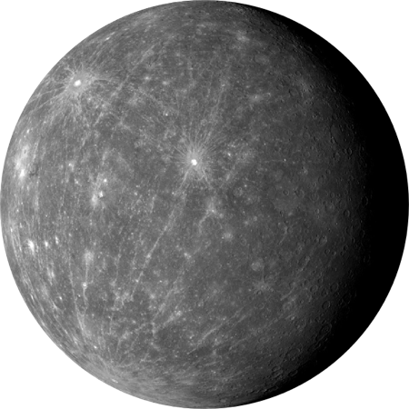
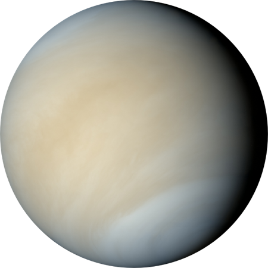
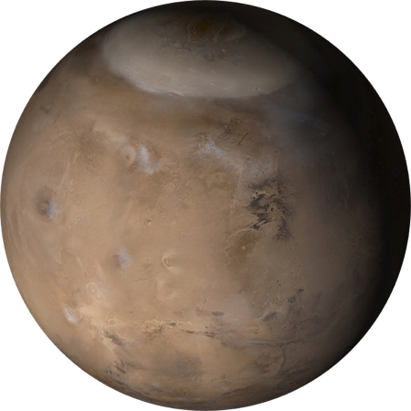
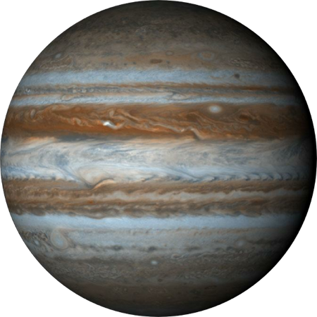
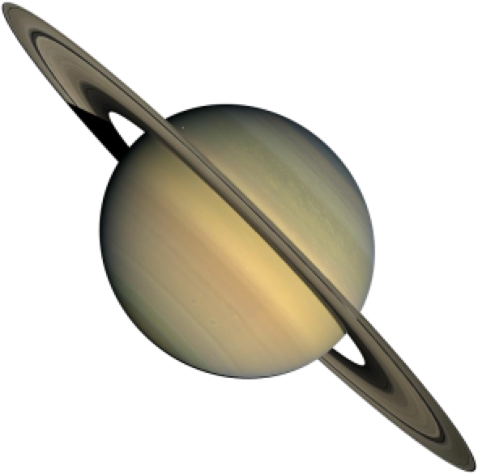
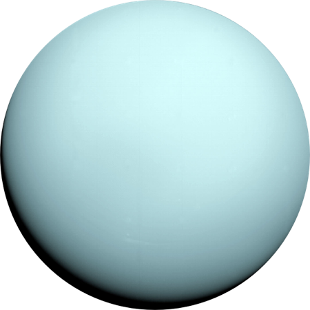
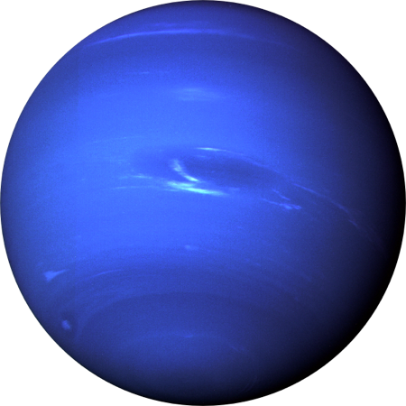

Discover the universe
A fun, interactive place to learn about space!
Enter some information for us!
We'll use your info to return some really cool facts
Submit

Mercury
Diameter:
4,879 km
Mass:
3.30 x 10^23 kg (5.5% Earth)
Moons:
None
Orbit Distance:
57,909,227 km (0.39 AU)
Orbit Period:
88 days
Surface Temperature:
-173 to 427°C
First Record:
14th century BC

Venus
Diameter:
12,104 km
Mass:
4.87 x 10^24 kg (81.5% Earth)
Moons:
None
Orbit Distance:
108,209,475 km (0.73 AU)
Orbit Period:
225 days
Surface Temperature:
462 °C
First Record:
17th century BC

Mars
Equatorial Diameter:
6,792 km
Polar Diameter:
6,752 km
Mass:
6.42 x 10^23 kg (10.7% Earth)
Moons:
2 (Phobos & Deimos)
Orbit Distance:
227,943,824 km (1.52 AU)
Orbit Period:
687 days (1.9 years)
Surface Temperature:
-153 to 20 °C
First Record:
2nd millennium BC

Jupiter
Equatorial Diameter:
142,984 km
Polar Diameter:
133,709 km
Mass:
1.90 × 10^27 kg (318 Earths)
Moons:
67 (Io, Europa, Ganymede & Callisto)
Rings:
4
Orbit Distance:
778,340,821 km (5.20 AU)
Orbit Period:
4,333 days (11.9 years)
Effective Temperature:
-145°C
First Record:
7th or 8th century BC

Saturn
Equatorial Diameter:
120,536 km
Polar Diameter:
108,728 km
Mass:
5.68 × 10^26 kg (95 Earths)
Moons:
62 (Titan, Enceladus, Iapetus & Rhea)
Rings:
30+ (7 Groups)
Orbit Distance:
1,426,666,422 km (9.54 AU)
Orbit Period:
10,756 days (29.5 years)
Effective Temperature:
-178 °C
First Record:
8th century BC

Uranus
Equatorial Diameter:
51,118 km
Polar Diameter:
49,946 km
Mass:
8.68 × 10^25 kg (15 Earths)
Moons:
27 (Miranda, Titania, Ariel, Umbriel & Oberon)
Rings:
13
Orbit Distance:
2,870,658,186 km (19.19 AU)
Orbit Period:
30,687 days (84.0 years)
Effective Temperature:
-216 °C
Discovery Date:
March 13th 1781

Neptune
Equatorial Diameter:
49,528 km
Polar Diameter:
48,682 km
Mass:
1.02 × 10^26 kg (17 Earths)
Moons:
14 (Triton)
Rings:
5
Orbit Distance:
4,498,396,441 km (30.10 AU)
Orbit Period:
60,190 days (164.8 years)
Effective Temperature:
-218 °C
Discovery Date:
September 23rd 1846